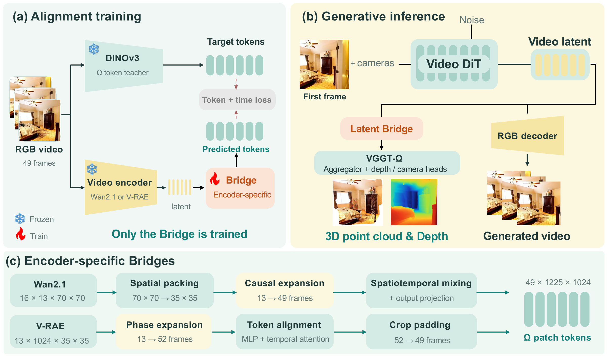

Latent BridgeFrom Video Latents to 3D Geometry
via Feature Alignment
1 Huazhong University of Science and Technology2 Horizon Robotics

THE IDEARecover geometry
Recover geometry
before decoding color.
Video generation and 3D reconstruction speak different representational languages. Connecting them usually means decoding RGB frames, then encoding those frames all over again.
Latent Bridge learns the connection instead. A representation-specific network maps Wan2.1 or V-RAE latents into the native feature space of frozen VGGT-Ω. The same latent can then produce both a video and cameras, depth, and 3D point clouds.
Only the Bridge is trainedNo GT geometry supervisionFrozen geometry model
Qualitative Results
3D point clouds
Applications to other I2V and T2V models.
Quantitative Results
THE MATCHED-LATENT COMPARISONLess decoding.
Less decoding.
More direct.
Same generated latents. Same frozen Ω aggregator and heads. Only the route into the geometry model changes.
Table 3 in the paper ↗Wan2.1 1.61×
RGB route7.92 s
Bridge4.92 s
V-RAE 1.24×
RGB route5.76 s
Bridge4.64 s
Citation
Preprint metadata; no arXiv identifier has been supplied.@misc{zhang2026latentbridge,
title={Latent Bridge: From Video Latents to 3D Geometry via Feature Alignment},
author={Shuai Zhang and Zhanpeng Ouyang and Zhengqing Chen and Ruohong Mei and Shaoyu Chen and Weiqiang Ren and Hui Sun and Qian Zhang and Wenyu Liu and Xinggang Wang},
year={2026},
note={Preprint}
}